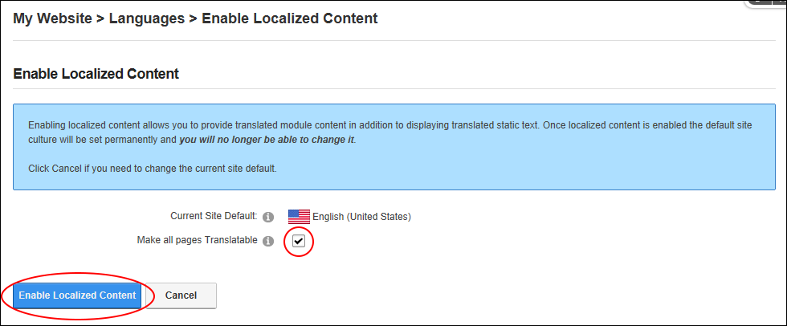
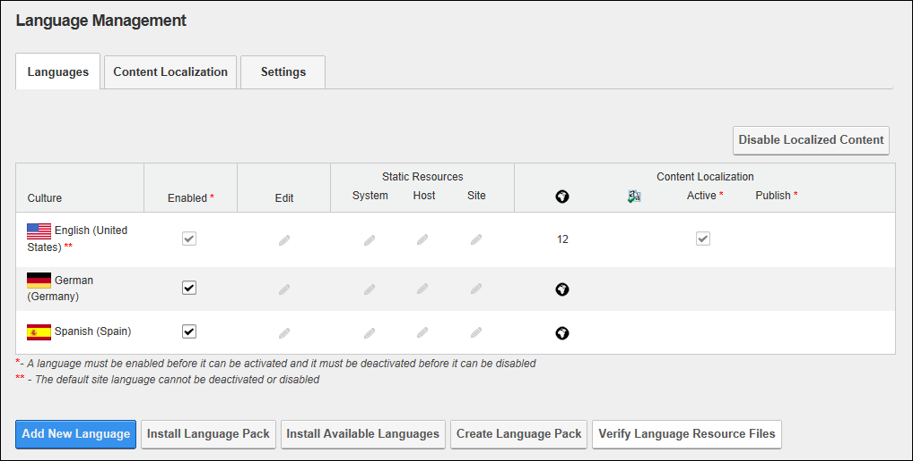
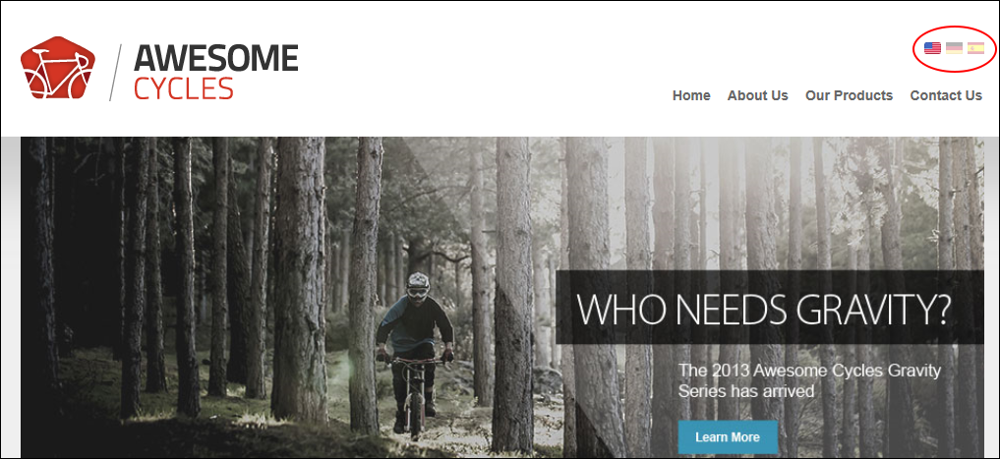

Enabling Localized Content
How to create a localized copy of the current site content for each of the enabled languages using the Languages module. This creates a translator role ( titled Translator and then appended with the country code. E.g. Translator (EN-AU) ) for each enabled language. This also enables the Localization tab under Page Settings for all site pages. See "Localization Settings for New Pages". DNN Platform users (including anonymous users) must be granted Edit Module permissions. Evoq Content users (including anonymous users) must be granted Edit Content permissions.
Localized content must be enabled by a SuperUser. Localized content cannot be disabled once it has been enabled. See "Allowing/Disallowing Content Localization"
- Navigate to Admin > Advanced Settings >
 Languages - OR - Go to a Languages module.
Languages - OR - Go to a Languages module.
- Select the Languages tab.
- Click the Enable Localized Content button.

- The Enable Localized Content message box is now displayed listing the Current Site Default language and informing you that this language cannot be changed once localized content is enabled. If you wish to change the default site culture, you must select Cancel now and change the default language.
- At Make all pages Translatable, select from these options:
- if all pages that are in the default language will be made translatable. This creates a copy of all translatable pages for each of the enabled languages.
- if you only want to translate some of the pages that are in the default language into other languages. This allows you to maintain some or most of the site in the default language and only manage selected pages, such as the contact page or pages that don't frequently change content, into other languages. This is the default setting.

- Click the Enable Localized Content button. This displays progress bars that show the languages and pages being created for each of the enabled languages and creates a copy of each of these pages (including the modules and content on these pages) for each language. It also creates a translator role for each language. Once this step is complete, a new tab called "Content Localization" is available on the Languages module and a new section titled Content Localization is displayed in the culture grid with the following new fields:
- No of Pages: This displays the number of pages and the percentage of pages that have been localized. Note: In this example, the number of pages is shown is zero ( 0 ) for the default language of English (United States) as no pages have been localized as yet. For each of the other enabled languages, the No of Pages button is displayed as a link that you can click to create localized pages for that language. Each enabled language displays this button, allowing you to choose different pages to localize for each language as required.
If all pages were chosen from translation then the number of pages that were localized (e.g. 12) would be the same for the default language of English (United States) and all other enabled languages and percentage of localized pages would be 100%.  Translated Pages: This displays the number of page and the percentage of pages that have been translated.
Translated Pages: This displays the number of page and the percentage of pages that have been translated.
- Active: Localized content is activated / not activated.
- Publish: The Publish Pages
 icon enables editors to publish pages that are marked as translated for this language.
icon enables editors to publish pages that are marked as translated for this language.

To view the newly created localized copies for this language, click on the country flag for this language (typically located in the top right corner of the site above the menu). This displays the localized copies of these pages in the menu. Note: Page names are appended with the country code. E.g. For Australia it is (EN-AU). You can modify these names as you like by editing the Page Name. See "Page Details Settings for Existing Pages"

A translator role named Translator (en-AU) is now displayed in the Security Roles module for each language that is enabled. Before translation can begin, the users who are the translators for each language should be added to the newly created translator roles. See "Adding A User to a Role"
Tip: You can also assign other roles as translators for a language. See "Setting Translator Roles"
Next Step: You are now ready to begin translation. See "Translating a Page" or See "Translating a Module".